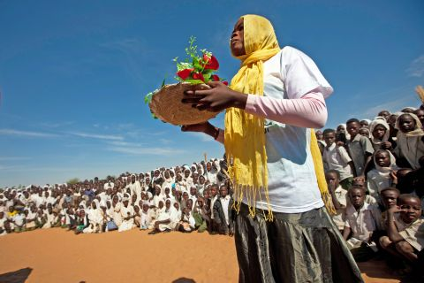

The threats weighing on wildlife are often large and complex, so much so individuals might feel powerless about them. However, every person’s small actions add up to a much larger solution – making the difference between a species surviving or disappearing forever.
Just #DoOneThingToday to make a difference and help wildlife conservation.
Set a Goal – Live your daily life with the smallest negative impact on the environment, wildlife, their habitats, or the planet’s biodiversity.
Mobilize – Encourage local schools, clubs, governments and businesses to discuss wildlife conservation and what you and your community can do to help.
Visit – Aquariums, botanical gardens, national parks and nature reserves. Research holiday destinations and countries that work hard to protect wildlife and habitats.
Consume Responsibly – By not purchasing products made from illegally sourced protected wildlife or their parts and products, you can stop wildlife trafficking from being a profitable enterprise. More information can be found through your national or local wildlife authorities or the Convention on International Trade in Endangered Species or Wild fauna and Flora (CITES).
Volunteer – We cannot always give money, but we can donate our time. Often wildlife organisations and zoos have volunteer programs. You could also help clean beaches, rescue wild animals or teach tourists about your local habitat.
Stay informed – Learn more about our planet’s flora and fauna, including those that are in danger of extinction. Research ways that you or your community can conserve and protect wildlife. Inform yourself on current environmental matters and be aware of your individual impact on ecosystems and wildlife. Think globally, act locally.
Speak up – Share your knowledge, passion and questions about wildlife conservation with your friends, family and community – either in person or online.
Reach out – inform authorities if you have information on illegal logging, fishing and wildlife trafficking; whistle-blowers play a critical role in detecting wildlife crimes and holding criminal smugglers accountable.